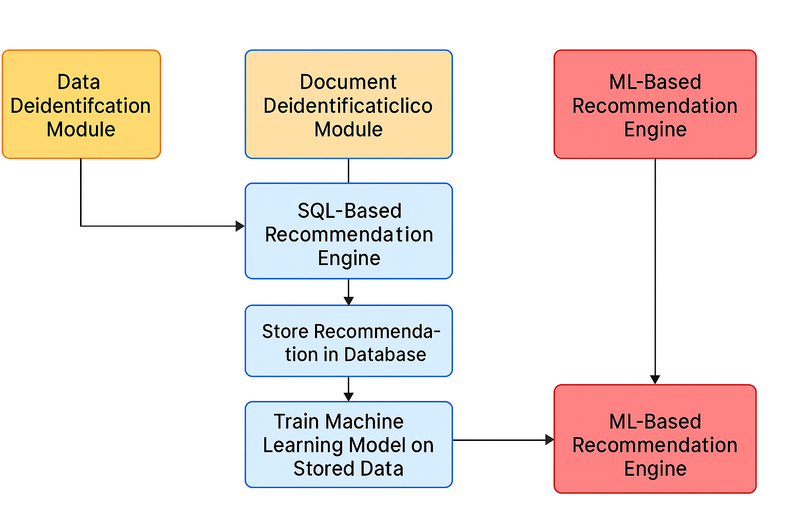

🔍 Project Overview
In today’s landscape of data privacy, smart anonymization isn’t a luxury—it’s a necessity. This project aimed to create a Recommendation Engine (RE) that suggests anonymization strategies for data deidentification and document deidentification workflows. The focus was on building a system that improves user experience by suggesting strategies based on what has worked in the past.
We built two separate engines:
- One for Data Deidentification
- Another for Document Deidentification
✨ Business Need
Users often need to anonymize sensitive fields, but choosing the right strategy manually is slow and inconsistent. The recommendation engine was designed to:
- Reduce manual efforts
- Suggest effective strategies automatically
- Learn and improve over time
"Give users the best-fit anonymization strategy based on real-world patterns, not guesswork."
🧩 Phase 1: SQL-Based Recommendation Engine
Why SQL first? Initially, we had limited data to build a machine learning model. So, we developed a logic-based engine using historical data.
How It Worked
- Pulled anonymization logs from the backend database
- Merged information across tables
- Grouped and ranked strategies based on variable name, type, and dataset type
- The most frequently applied strategy was shown as Recommended; others as Suggested
🤖 Phase 2: Machine Learning-Based Recommendation Engine
As user interactions grew, the data volume reached a threshold that made ML feasible.
Data Pipeline
- Target Variable: Applied Strategy
- Features: Variable name (text), variable type, dataset type, metadata fields
Preprocessing
- Removed unrelated fields
- Applied TF-IDF Vectorization on text columns
- Trained on historical strategy data
Model Selection
- Tested several models
- Random Forest performed best in both modules
- Model returns ranked strategy recommendations for new inputs
🎯 Impact
- Improved speed: No manual searching for strategies
- Better accuracy: Data-driven suggestions
- Smarter engine: Adapts as more data is collected
What started as a rules engine evolved into a self-learning recommender.
📈 Flowchart
User Anonymizes Data ↓
Logs Saved to Database ↓
SQL Engine Ranks Strategy Frequency ↓
Initial Recommendations Shown ↓
ML Pipeline Trained Over Time ↓
Random Forest Model Predicts Best Strategy ↓
ML Recommendations Shown to User ↓
Logs Saved to Database
📊 Visual Flowchart
💡 Future Enhancements
- Use real-time feedback to retrain models
- Introduce reinforcement learning to improve dynamically
- Integrate with compliance checks (e.g., HIPAA, GDPR)
📘 Summary Table
| Feature | Description |
|---|---|
| Tools Covered | Data & Document Deidentification |
| Initial Method | SQL-based strategy ranking |
| Upgrade Path | ML with Random Forest + TF-IDF |
| Benefit | Auto-suggests best-fit anonymization strategies |